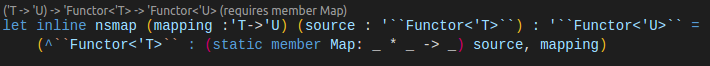

module List
from Microsoft.FSharp.Collections
--------------------
type List<'T> =
| ( [] )
| ( :: ) of Head: 'T * Tail: 'T list
interface IEnumerable
interface IEnumerable<'T>
member GetSlice : startIndex:int option * endIndex:int option -> 'T list
member Head : 'T
member IsEmpty : bool
member Item : index:int -> 'T with get
member Length : int
member Tail : 'T list
static member Cons : head:'T * tail:'T list -> 'T list
static member Empty : 'T list
Full name: Microsoft.FSharp.Collections.List<_>
Full name: Microsoft.FSharp.Collections.List.map
Full name: Microsoft.FSharp.Collections.List.filter
Full name: Microsoft.FSharp.Collections.List.toArray
from Microsoft.FSharp.Collections
Full name: Microsoft.FSharp.Collections.Array.reduce
Full name: Typeclassish.y
| Element of 'T
| Tree of 'T * BinaryTree<'T> * BinaryTree<'T>
member Map : f:('T -> 'a) -> BinaryTree<'a>
Full name: Typeclassish.BinaryTree<_>
member BinaryTree.Map : f:('T -> 'a) -> BinaryTree<'a>
Full name: Typeclassish.BinaryTree`1.Map
--------------------
module Map
from Microsoft.FSharp.Collections
--------------------
type Map<'Key,'Value (requires comparison)> =
interface IEnumerable
interface IComparable
interface IEnumerable<KeyValuePair<'Key,'Value>>
interface ICollection<KeyValuePair<'Key,'Value>>
interface IDictionary<'Key,'Value>
new : elements:seq<'Key * 'Value> -> Map<'Key,'Value>
member Add : key:'Key * value:'Value -> Map<'Key,'Value>
member ContainsKey : key:'Key -> bool
override Equals : obj -> bool
member Remove : key:'Key -> Map<'Key,'Value>
...
Full name: Microsoft.FSharp.Collections.Map<_,_>
--------------------
new : elements:seq<'Key * 'Value> -> Map<'Key,'Value>
Full name: Typeclassish.t1
Full name: Typeclassish.t2
union case Vector2D.Vector2D: 'a * 'a -> Vector2D<'a>
--------------------
type Vector2D<'a> =
| Vector2D of 'a * 'a
static member ( ~-. ) : Vector2D<'a0> -> Vector2D<'a0> (requires member ( ~- ))
Full name: Typeclassish.Vector2D<_>
union case Vector3D.Vector3D: 'a * 'a * 'a -> Vector3D<'a>
--------------------
type Vector3D<'a> =
| Vector3D of 'a * 'a * 'a
static member ( ~-. ) : Vector3D<'a0> -> Vector3D<'a0> (requires member ( ~- ))
Full name: Typeclassish.Vector3D<_>
Full name: Typeclassish.a
Full name: Typeclassish.b
from Coletto.TypeClassish
from Coletto.TypeClassish.Collections
Full name: Typeclassish.amap
Full name: Coletto.TypeClassish.Collections.Base.simplemap
Full name: Typeclassish.bmap
Full name: Typeclassish.cmap
union case Fmap.Fmap: Fmap
--------------------
type Fmap =
| Fmap
static member ( $ ) : Fmap:Fmap * x:'a array -> (('a -> 'b) -> 'b [])
static member ( $ ) : Fmap:Fmap * x:'a list -> (('a -> 'b) -> 'b list)
static member ( $ ) : Fmap:Fmap * x:'a option -> (('a -> 'b) -> 'b option)
Full name: Typeclassish.Fmap
Full name: Microsoft.FSharp.Core.array<_>
Full name: Microsoft.FSharp.Collections.Array.map
Full name: Microsoft.FSharp.Collections.list<_>
Full name: Microsoft.FSharp.Core.option<_>
from Microsoft.FSharp.Core
Full name: Microsoft.FSharp.Core.Option.map
Full name: Typeclassish.map
Full name: Typeclassish.exampleFunction
Full name: Typeclassish.x
Full name: Typeclassish.y
Full name: Typeclassish.exampleFunction'
Full name: Typeclassish.x'
Full name: Typeclassish.y'
val seq : sequence:seq<'T> -> seq<'T>
Full name: Microsoft.FSharp.Core.Operators.seq
--------------------
type seq<'T> = System.Collections.Generic.IEnumerable<'T>
Full name: Microsoft.FSharp.Collections.seq<_>
from Microsoft.FSharp.Collections
Full name: Microsoft.FSharp.Collections.Seq.map
union case Tree.Tree: 't * Tree<'t> * Tree<'t> -> Tree<'t>
--------------------
type Tree<'t> =
| Tree of 't * Tree<'t> * Tree<'t>
| Leaf of 't
Full name: Typeclassish.Tree<_>
union case ThreeMap.ThreeMap: ThreeMap
--------------------
type ThreeMap =
| ThreeMap
static member ( ?<- ) : x:'a array * _Blank:ThreeMap * 'b array -> (('a -> 'b) -> 'b array)
static member ( ?<- ) : x:'a list * _Blank:ThreeMap * 'b list -> (('a -> 'b) -> 'b list)
static member ( ?<- ) : x:'a option * _Blank:ThreeMap * 'b option -> (('a -> 'b) -> 'b option)
static member ( ?<- ) : x:Tree<'a> * _Blank:ThreeMap * Tree<'b> -> (('a -> 'b) -> Tree<'b>)
Full name: Typeclassish.ThreeMap
Full name: Typeclassish.threemap
from Microsoft.FSharp.Core.Operators
Full name: Microsoft.FSharp.Core.Operators.Unchecked.defaultof
Full name: Typeclassish.ma
Full name: Typeclassish.mb
Full name: Typeclassish.mc
Full name: Typeclassish.mt
Full name: Typeclassish.Default2
inherit Default2
Full name: Typeclassish.Default1
module Map
from Microsoft.FSharp.Collections
--------------------
type Map =
inherit Default1
static member Invoke : mapping:('T -> 'U) -> source:'A -> 'B (requires member Map)
static member InvokeOnInstance : mapping:('T -> 'U) -> source:'A -> 'B (requires member Map)
Full name: Typeclassish.Map
--------------------
type Map<'Key,'Value (requires comparison)> =
interface IEnumerable
interface IComparable
interface IEnumerable<KeyValuePair<'Key,'Value>>
interface ICollection<KeyValuePair<'Key,'Value>>
interface IDictionary<'Key,'Value>
new : elements:seq<'Key * 'Value> -> Map<'Key,'Value>
member Add : key:'Key * value:'Value -> Map<'Key,'Value>
member ContainsKey : key:'Key -> bool
override Equals : obj -> bool
member Remove : key:'Key -> Map<'Key,'Value>
...
Full name: Microsoft.FSharp.Collections.Map<_,_>
--------------------
new : elements:seq<'Key * 'Value> -> Map<'Key,'Value>
Full name: Typeclassish.Map.Invoke
Full name: Typeclassish.Map.InvokeOnInstance
Full name: Microsoft.FSharp.Collections.Seq.iter
Full name: Microsoft.FSharp.Core.Operators.( |KeyValue| )
from Coletto.TypeClassish.Collections
type SealedAttribute =
inherit Attribute
new : unit -> SealedAttribute
new : value:bool -> SealedAttribute
member Value : bool
Full name: Microsoft.FSharp.Core.SealedAttribute
--------------------
new : unit -> SealedAttribute
new : value:bool -> SealedAttribute
Type Classes in FSharp

- William Coletto
- @willisbueller
- github/angrydexterous
More intro
- Presentation available at https://angrydexterous.github.io/typeclassish.html#/
- Code available at https://github.com/angrydexterous/FsReveal-Type-Classish
Type-Classes
Why should I care?
Simplest Example
1: 2: 3: 4: 5: 6: |
|
Ah Crap! I wanted to start with a seq
Slightly more complex example
Courtesy Eugene Tolmachev, Fyodor Soikin, Gustavo Leon
I want to pass in f which can operate on multiple datatypes
1: 2: 3: 4: |
|
No good.
f is automatically inferred by the first call (with type int)
Complex Example
Monad Transformers
...You're going to have to read 5 blog articles (Here's a good one to start with) and a few academic papers on the subject, but the gist of it is below (taken from that example), and it's doable in FSharp today with the FSharpPlus library
Basically though, you can stack Monads.
For instance -> Stack a IO (async) with a Reader to do configuration injection on an async server you're writing.
So what are type classes?
They are Ad-Hoc Polymorphism
-
Operator or function overloading with constraints
- "This function will run on Type X if Type X implements foo"
-
Contrasts with Parametric Polymorphism
- Generics, where type is parameterized by caller
Parametric Polymorphism (Not Type Classes)
Parametric polymorphism (...), allows a single piece of code to be typed “generically,” using variables in place of actual types, and then instantiated with particular types as needed. Parametric definitions are uniform: all of their instances behave the same. (...)
TAPL , §23.2:
Parametric Polymorphism (Not Type Classes)
Example rosettacode
1: 2: 3: 4: 5: 6: 7: 8: 9: 10: |
|
Ad-Hoc Polymorphism (Type Classes)
TAPL
Ad-hoc polymorphism, by contrast, allows a polymorphic value to exhibit different behaviors when “viewed” at different types. The most common example of ad-hoc polymorphism is overloading, which associates a single function symbol with many implementations; the compiler (or the runtime system, depending on whether overloading resolution is static or dynamic) chooses an appropriate implementation for each application of the function, based on the types of the arguments.
TAPL , §23.2:
Ad-Hoc Polymorphism (Type Classes)
Example Operator Overloading Gustavo Leon
1: 2: 3: 4: 5: 6: 7: 8: 9: |
|
|
|
Extending this to mimic Haskell Type Classes
1: 2: 3: 4: 5: 6: |
|
|
|
|
What???
How'd that work?
1: 2: 3: 4: 5: 6: |
|
How that works
Operator Overloading
They have a particular behavior, at operator resolution the compiler looks in every operand class, so for example if we have a binary operator $ : (‘a,’b) -> ‘c it looks first into class ‘a then into class ‘b for the operator definition. So the trick is we will use an intermediary class with an operator with overloads for the second parameter. Gustavo Leon
Digression: Inline Methods with Operator Overloading
Introduction Anton Tayanovskyy
To cut the long story short, before compiling to .NET F# expands methods declared inline and does overload resolution. This was intended to support flexible operator overloading, but opens up the door for interesting hacks. Even code that generalizes over higher kinds and therefore cannot exist at .NET level can with these hacks exist at the inline F# level.
Non-Inline Problem Example
1: 2: 3: |
|
val exampleFunction : a:int -> b:int -> int //Determined by first call
severity: 'Error' message: 'This expression was expected to have type 'int' but here has type 'float'
Corrected with inline
1: 2: 3: |
|
|
|
Statically resolved:
val inline exampleFunction' : a: ^a -> b: ^b -> ^c when ( ^a or ^b) : (static member ( + ) : ^a * ^b -> ^c)
So back to type classes
1: 2: 3: 4: 5: 6: |
|
val inline map :
f:'a -> x: ^b -> 'c
when (Fmap or ^b) : (static member ( $ ) : Fmap * ^b -> 'a -> 'c)
Type classes allow you to define a set of functionality a type must provide so that a function can be run on the type.
- Note our map function requires static member $ with a particular signature. That's how we're getting type class support
Going Deeper
We have an ability to now match on a function with a single input type, and no mention of an output type.
What if we only have an output type? Or what if we care about input and output type?
Use a 3 parameter operator and overload it. The ternary operator fits the bill.
For unary functions we can just ignore an extra parameter. In the below case we are using the 3rd param just to match with the output type of the
mapping function, and then ignoring it (see unchecked.defaultof below)
1: 2: 3: 4: 5: 6: 7: 8: 9: 10: 11: 12: 13: 14: 15: 16: 17: |
|
Applying with the new map function
1: 2: 3: 4: |
|
|
|
|
|
But what if we want to add our own new types?
You can't add new operator overloads through extension types
So we must go deeeper
Going Deeper
Looking at FsharpPlus by Gustavo Leon
- Solid up-to-date library
- Support for a ton of types build-in, with common functions defined (plus a whole lot more)
- Actively maintained by Gustavo
- Gustavo contributed PR's in F# 4.1 to fix bugs and speed things up related to this work
- Moves from operator overloading to method overloading
Stripping away everything - A Brief Peek at FSharpPlus
Getting to a minimal subset of code in the library to get an idea of how it works
1: 2: 3: 4: 5: 6: 7: 8: 9: 10: 11: 12: 13: |
|
Code Cont'd
1: 2: 3: 4: 5: 6: 7: 8: 9: 10: 11: 12: 13: 14: 15: 16: 17: |
|
The heart of it all
Map
1:
|
|
Before we dive in
A demo
1: 2: 3: 4: 5: 6: |
|
|
|
|
Demo Cont'd
1: 2: 3: 4: 5: 6: 7: |
|
|
|
Demo Cont'd
1: 2: 3: 4: 5: 6: 7: 8: 9: 10: |
|
|
Looking at the help functions in FSharpPlus
1: 2: 3: 4: 5: 6: 7: 8: 9: 10: 11: 12: 13: |
|
Let's focus on the case of generic Map on your own Type
With a non-overloaded Map member
Deeper dive on Types with Single Map member
Define a function that allows us to map on our own Types
1: 2: |
|
That's it.
Take a function 'T->'U and a source type 'A and spit back out 'B Static member constraint specified that type A has to define Map with type _*_ -> _
Let's run our tree through it
1: 2: 3: 4: 5: 6: 7: 8: 9: 10: 11: 12: |
|
|
Good!
Clean up the sig
We can use quotations to clean the signature up a little if we like too
Let's bring that back into a type as a helper function
...which brings it back identically to the helper type in FSharpPlus's Map Type
1: 2: 3: 4: 5: 6: 7: 8: |
|
|
Now let's work on Types with overloads
The important bits in FSharpPlus
1: 2: 3: 4: 5: 6: 7: 8: 9: 10: 11: 12: 13: |
|
1: 2: |
|
Are used to help the compiler align which overloads to call. Let's take a look at how this works in FSharpPlus
1: 2: 3: 4: |
|
-
The third parameter is an unused param of type Default2(where Default2 <- Default1 <- Map).
-- In most cases it's typed to the current class. - In seq's case, it's kicked up the class hierarchy to default2.
I still can't say why for sure at this point, but this appears to be used to type methods back to this class, and in some cases massage
the type checker and compiler back into compliance with what we're trying to do.
More on the last part in the next slide...
Seq messed things up. Other things probably do too.
Having seq in the mix messes up the typing of the generic map function by forcing it to be constrained to the seq type. We actually hit this problem in our above operator overloading methods, but I cut sequence out to save the discussion for this slide.
1: 2: 3: 4: 5: 6: |
|
The above code fixes the type inference on map when seq is added... Not entire sure why. But it does.
Without it, map won't work for anything other than a sequence
That's it.
With the code we just covered we're back at the minimum generic mapping Type we showed code to earlier
The End
Questions?
- William Coletto
- @willisbueller
- github/angrydexterous